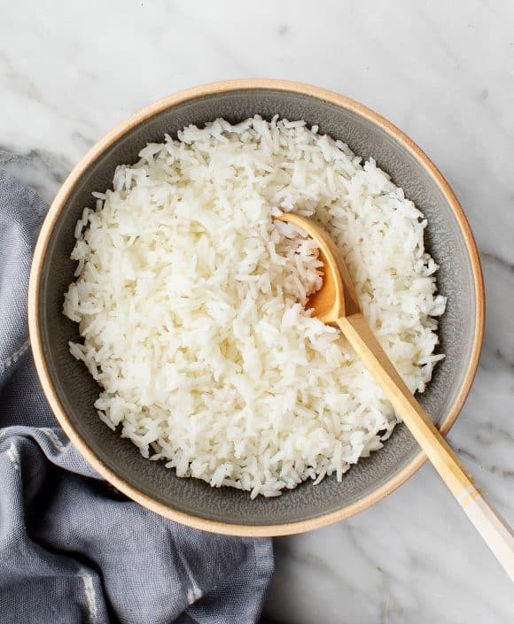

White Rice

Description
Cooking rice is probably the easiest thing in the world. And it is made even easier with this recipe
Ingredients
- 1 of cup long grain white rice
- 2 cups of water
Steps
- Rinse the rice first before cooking to remove the starch.
- Pour 1 cup of rice and then 2 cups of water into the pot. Then turn on the heat with the lid opened.
- After the water starts boiling, cover the lid and reduce the heat.
- Fluff the rice after cooking, using a fork.